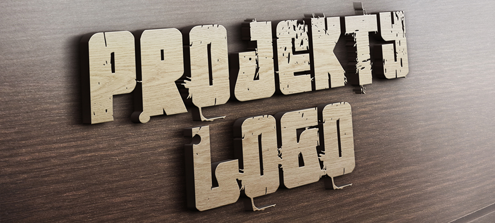

FIRMA CIEKAWE LOGO
Jakie znaczenie dla firmy moїe mieж maіy znaczek bкd№cy elementem caіej identyfikacji wizualnej?
Jak siк okazuje ogromne. Logotyp jest niczym innym, jak wizytуwk№ firmy, dziкki ktуrej potencjalny
klient juї dziкki jednemu spojrzeniu ma wiedzieж, їe nie powinien korzystaж z usіug їadnej innej
firmy, jak tylko tej ktуr№ reprezentuje dany 'znaczek'.
Gіуwn№ cech№ dobrego logotypu jest przede wszystkim jego unikatowoњж, dziкki ktуrej obraz gікboko zapada
w pamiкж odbiorcy.

Oryginalne logo ma za zadanie przede wszystkim wpіyn№ж na podњwiadomoњж odbiorcy i sprawiж, їe bкdzie on postrzegaі dan№ markк, jako wyj№tkow№, a co za tym idzie zdecydowanie godn№ uwagi. Chociaї logo wydaje siк byж tylko maіym obrazkiem, praca nad stworzeniem niepowtarzalnego logo jest bardzo zіoїona i dіugotrwaіa. Podczas projektowania logo naleїy uwzglкdniж wszelkie walory marki, tak aby mogіy one zostaж odzwierciedlone w efekcie koсcowym.
<